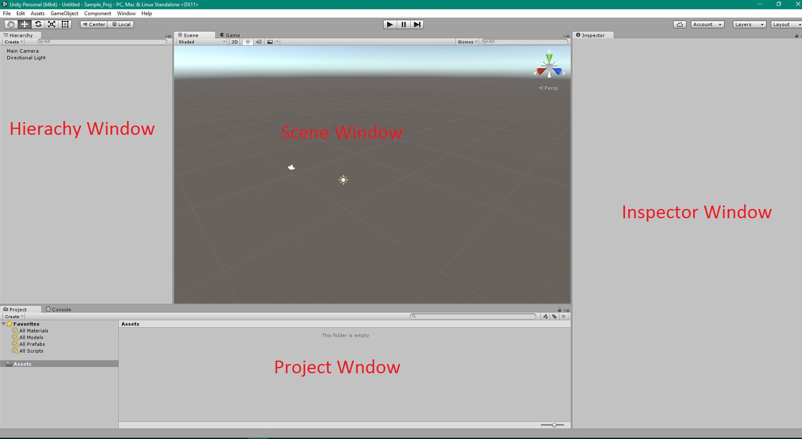
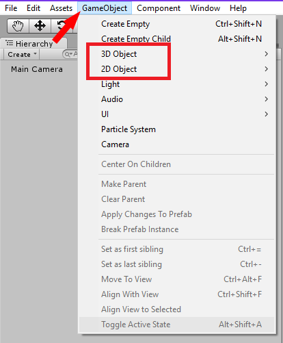

Getting started with C#
First download and install Visual Studio Code and .NET Core.
You will need to install C# extension inside Visual Studio Code in order to write and test your code in C#.
Open Visual Studio Code, Go to View > Extensions, then type in C# and Select C# for Visual Studio Code(powered by OmniSharp) to install.


To Create a folder for your C# project.
1. Open the Command prompt for Windows/Terminal for Mac.
2. In the command prompt/terminal enter the following command
"dotnet new console -o helloWorldApp", without the quotations marks.
Please note that "helloWorldApp" is the project folder name, you can name it whatever you like.
3. Next, enter the command "cd helloWorldApp", without the quotations marks.
4. Next,enter the command "dotnet restore" without the quotations marks. This command will restore the packages in the project file
5. The final command, enter "dotnet run", without the quotations marks. This will run helloWorldApp
6. Open VSC(Visual Studio Code), In VCS you can open the project by going to "File -- Open " then search for your project to open .
7. You can find the Debugger tool here.

8. Click the Debugger button to run the program.

You have now created a template hello World Application!
Now let's try to create a simple C# project using Unity game engine. First download and install Unity.
What Scratch look like
In Scratch, you start your project like this. You drag and drop the Scratch blocks you need into the Script editing area.

What Unity look like
In Unity, you start your project like this. Unlike Scratch, Unity offers a wide range of assets that you can import. You can even create assets yourself. Unity requires the use of code editor such as Visual Studio Code.
First run Unity, click "New project".

1.Name your Unity project.
2.Select a location where you want to save yor Unity project.
3.Select 3D if you want to create a 3D game or 2D for a 2D game.
4.Click "Create project".
Once you have installed Unity and Visual Studio Code, the first thing you need to do is to change the default IDE to Visual Studio Code in Unity.
1. Open Unity. Go to Edit > Preferences.
2. Next Unity Preferences Window will appear, Go to External Tools > External Script Editor > Select Browse.
3. You will have to browse where you have installed Visual Studio Code application, Once you have found it double click it.
4. You now have Visual Studio Code as your default IDE for Unity 3D.

Make sure you have installed "Unity Debugger for Unity" extension from Visual Studio Code
To create a 2D or 3D game object is very simple.
1.Go to GameObject
2.Select either a 2D or 3D gameobject.
3.The gameobject will now appear on the Hierarchy window and also the Scene window.
In Scratch a basic movement code looks like this.

How do we do this in C#?
The below C# code allows you to move game object using the arrow keys/WASD keys in Unity.
In Scratch, a simple collision detection and destroy looks like this.

How do we do this in C#?
1. Create a 2D gameobject named "Player".
2. Create a another 2D gameobject named "Enemy".
3. You will need to add a ridgetbody 2D component to your Player gameobject.
4. You will need to enable "Freeze Position X and Y" under rigetbody 2D" settings.
5. Add the script below to your player gameobject.